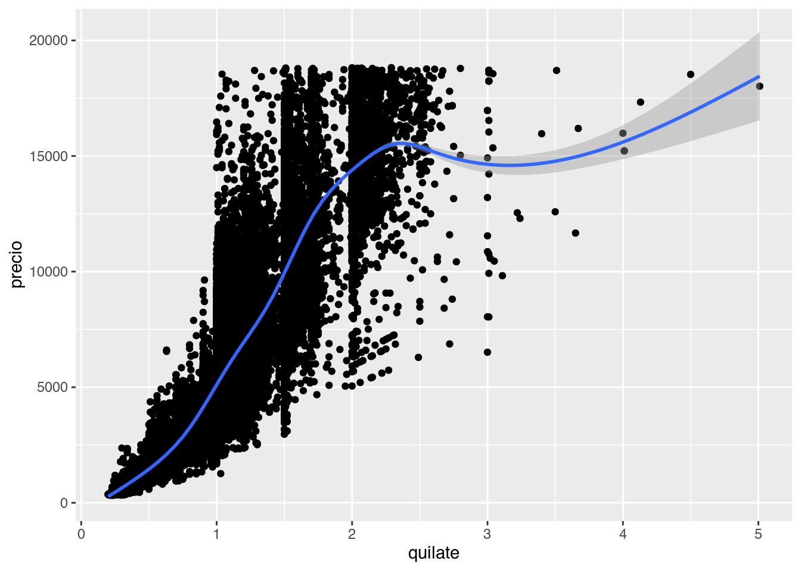

Hasta ahora y asumiendo que recorriste los episodios anteriores, visualizamos los datos tal cual vienen en la base de datos o con ayuda de dplyr para transformarlos. Vamos ver como transformar los datos usando ggplot2.
De paso vamos a usar datos incluidos en el paquete datos (muchos paquetes traen bases de datos para probar cosas, este en particular son todas bases de datos en español!) que podés descargar como siempres con install.packages("datos"). Los datos diamantes contiene información sobre ~ 54000 diamantes, incluido el precio, el quilate, el color, la claridad y el corte de cada uno.
library(ggplot2)
library(datos)
##
## Attaching package: 'datos'
## The following object is masked _by_ '.GlobalEnv':
##
## paises
str(diamantes)
## tibble [53,940 × 10] (S3: tbl_df/tbl/data.frame)
## $ precio : int [1:53940] 326 326 327 334 335 336 336 337 337 338 ...
## $ quilate : num [1:53940] 0.23 0.21 0.23 0.29 0.31 0.24 0.24 0.26 0.22 0.23 ...
## $ corte : Ord.factor w/ 5 levels "Regular"<"Bueno"<..: 5 4 2 4 2 3 3 3 1 3 ...
## $ color : Ord.factor w/ 7 levels "D"<"E"<"F"<"G"<..: 2 2 2 6 7 7 6 5 2 5 ...
## $ claridad : Ord.factor w/ 8 levels "I1"<"SI2"<"SI1"<..: 2 3 5 4 2 6 7 3 4 5 ...
## $ profundidad: num [1:53940] 61.5 59.8 56.9 62.4 63.3 62.8 62.3 61.9 65.1 59.4 ...
## $ tabla : num [1:53940] 55 61 65 58 58 57 57 55 61 61 ...
## $ x : num [1:53940] 3.95 3.89 4.05 4.2 4.34 3.94 3.95 4.07 3.87 4 ...
## $ y : num [1:53940] 3.98 3.84 4.07 4.23 4.35 3.96 3.98 4.11 3.78 4.05 ...
## $ z : num [1:53940] 2.43 2.31 2.31 2.63 2.75 2.48 2.47 2.53 2.49 2.39 ...
Gráficos de frecuencias
Este es un gráfico de barras construido usando la función geom_bar(). En el eje x muestra el corte de los diamantes y en el eje y la cantidad (count en inglés) de diamantes en cada categoría. Pero diamantes no tiene una variable que se llame count y tampoco la generamos nosotros. ¡Es calculada internamente por ggplot2!.
ggplot(data = diamantes, aes(x = corte)) +
geom_bar()

Cómo el gráfico de barras, también podemos graficar histogramas con geom_histogram() y polígonos de frecuencia con geom_density() para visualizar la cantidad de observaciones que caen en cada categoría (si la variable es discreta como el caso del corte de los diamantes) o rango de valores (para variables continuas).
Un ejemplo de variable continua es el precio de los diamantes, veamos como se ve un histograma y de paso le cambiamos el color a las barras, pero ojo, solo al borde.
ggplot(diamantes, aes(precio)) +
geom_histogram(color = "darkorange")
## `stat_bin()` using `bins = 30`. Pick better value with `binwidth`.

Primer desafío
¿Notaste el mensaje que devuelve el gráfico?
`stat_bin() using bins = 30. Pick better value with binwidth.`
Esta geometría tiene dos argumentos importantes bins y binwidth. Cambiá el valor de alguno de los dos argumentos y volvé a generar el gráfico, ¿que rol juegan los argumentos?
También podés revisar la documentación.
Además de contar la cantidad de elementos, ggplot2 puede calcular muchas otras transformaciones sobre los datos. Por ejemplo si quisieramos el porcentaje o la proporción que le corresponde a cada categoría de corte respecto del total podemos hacerlo mapeando esa transformación prop al eje y con la función stat().
ggplot(data = diamantes, aes(x = corte)) +
geom_bar(aes(y = stat(prop), group = 1))

Ahora podríamos decir que el 40% de los diamantes en la base de datos tienen un corte ideal. Además de la función stat() agregamos group = 1 y esto no fue sin querer. Probá correr el gráfico sin ese argumento.
Al incluir group = 1, ggplot2 junta todas las observaciones en un único grupo y calcula la proporción o el porcentaje que representa cada corte respecto del total de diamantes. Si no incluimos eso, ggplot2 asumirá que cada categoría de corte es un grupo independiente y el cálculo del porcentaje también lo hará por separado.
Posición
Ya vimos que la estética del color solo modifica el borde de las barras, si quisieras modificar el relleno necesitamos cambiar el fill y al igual que antes podemos mapear una variable a esta estética.
ggplot(data = diamantes) +
geom_bar(aes(x = corte, fill = claridad))

Al mapear una variable distinta, la claridad de los diamantes, podemmos visualizar información extra. Este “apilamiento” de las barras es la opción de posición por defecto position = "stack", pero podrías usar una de las otras tres opciones: "identity", "dodge" o "fill".
position = "identity" colocará cada barra comenzando en cero quedando todas superpuestas. Para ver esa superposición, debemos hacer que las barras sean ligeramente transparentes configurando el alpha a un valor pequeño.
ggplot(diamantes) +
geom_bar(aes(x = corte, fill = claridad), alpha = 0.2, position = "identity")

position = "fill" apila las barras al igual que position = "stack", pero transforma los datos para que cada conjunto de barras apiladas tenga la misma altura. Esto hace que sea más fácil comparar proporciones entre grupos.
ggplot(diamantes) +
geom_bar(aes(x = corte, fill = claridad), position = "fill")

position = "dodge" coloca las barras una al lado de la otra. Esto hace que sea más fácil comparar valores individuales.
ggplot(diamantes) +
geom_bar(aes(x = corte, fill = claridad), position = "dodge")

Gráficos de líneas suavizas
Cómo vimos antes, los gráficos de líneas suavizadas (smoothers) ajustan un modelo a los datos y luego grafican las predicciones del modelo. Sin entrar en muchos detalles, se puede aplicar distintos modelos y la elección del mismo dependerá de los datos.
ggplot(diamantes, aes(quilate, precio)) +
geom_point() +
geom_smooth()
## `geom_smooth()` using method = 'gam' and formula 'y ~ s(x, bs = "cs")'

Gráficos de caja
Los diagramas de caja, mejor conocidos como boxplots calculan un resumen robusto de la distribución y luego muestran una caja con formato especial.
La línea central de la caja corresponde a la mediana (el valor que toma el dato central) y los extremos de la caja son los quartil 25 y 75, definiendo así el rango intercuartil. Los extremos están definidos como 1.5 x quartil 25 o 75 y cualquier observación por debajo o por encima es un outliner o valor extremo.
ggplot(diamantes, aes(claridad, precio)) +
geom_boxplot()

Los boxplot dan muchísima información sobre los datos pero al mismo tiempo esconden la cantidad de observaciones que se usaron para generarlos y en particular cual es la frecuencia a lo largo del eje y. Por esta razón también existen geom_violin() y geom_jittere().
Segundo desafío
¿Notaste el mensaje que devuelve el gráfico?
- Volvé a graficar la distribución del precio para cada tipo de claridad pero ahora usando
geom_violin() y geom_jitter().
- ¿Qué ventajas y desventajas encuentran respecto de
geom_boxplot()?
ggplot(diamantes, aes(claridad, precio)) +
geom_violin()

ggplot(diamantes, aes(claridad, precio)) +
geom_jitter()
Cuando nuestra base de datos es muy grande corremos el riesgo de generar de que los elementos del gráfico estén tan juntos que se solapen y no se vean. Esto se conoce como overplotting. La base de datos diamantes tiene 53940 observaciones y al graficar un punto por cada una, aún si están separados por la claridad, quedan superpuestos.
Para resolver este problema se suele modificar la estética de los elementos, cambiando el tamaño o size para que ocupen menos lugar y se vean mejor, cambiando la forma o shape por alguna que no tenga relleno y permita ver los elemenos que hay atrás o modificando la transparencia o alpha por la misma razón. En bases de datos tan grandes como la de diamantes, muchas veces hay que utilizar varios de estos recursos.
Graficando en múltiples paneles
LS0tCnRpdGxlOiAiVmlzdWFsaXphY2nDs24gZGUgZGF0b3MgY29uIHtnZ3Bsb3QyfSBJSSIKb3V0cHV0OiAKICBodG1sX2RvY3VtZW50OgogICAgY29kZV9kb3dubG9hZDogdHJ1ZQogICAgdG9jOiB0cnVlCiAgICB0b2NfZmxvYXQ6IHRydWUKLS0tCgpgYGB7ciBzZXR1cCwgaW5jbHVkZT1GQUxTRX0Ka25pdHI6Om9wdHNfY2h1bmskc2V0KGVjaG8gPSBUUlVFKQpgYGAKCkhhc3RhIGFob3JhIHkgYXN1bWllbmRvIHF1ZSByZWNvcnJpc3RlIGxvcyBlcGlzb2Rpb3MgYW50ZXJpb3JlcywgdmlzdWFsaXphbW9zIGxvcyBkYXRvcyB0YWwgY3VhbCB2aWVuZW4gZW4gbGEgYmFzZSBkZSBkYXRvcyBvIGNvbiBheXVkYSBkZSBgZHBseXJgIHBhcmEgdHJhbnNmb3JtYXJsb3MuIFZhbW9zIHZlciBjb21vICp0cmFuc2Zvcm1hciogbG9zIGRhdG9zIHVzYW5kbyBnZ3Bsb3QyLgoKRGUgcGFzbyB2YW1vcyBhIHVzYXIgZGF0b3MgaW5jbHVpZG9zIGVuIGVsIHBhcXVldGUgYGRhdG9zYCAobXVjaG9zIHBhcXVldGVzIHRyYWVuIGJhc2VzIGRlIGRhdG9zIHBhcmEgcHJvYmFyIGNvc2FzLCBlc3RlIGVuIHBhcnRpY3VsYXIgc29uIHRvZGFzIGJhc2VzIGRlIGRhdG9zIGVuIGVzcGHDsW9sISkgcXVlIHBvZMOpcyBkZXNjYXJnYXIgY29tbyBzaWVtcHJlcyBjb24gYGluc3RhbGwucGFja2FnZXMoImRhdG9zIilgLiBMb3MgZGF0b3MgYGRpYW1hbnRlc2AgY29udGllbmUgaW5mb3JtYWNpw7NuIHNvYnJlIH4gNTQwMDAgZGlhbWFudGVzLCBpbmNsdWlkbyBlbCBgcHJlY2lvYCwgZWwgYHF1aWxhdGVgLCBlbCBgY29sb3JgLCBsYSBgY2xhcmlkYWRgIHkgZWwgYGNvcnRlYCBkZSBjYWRhIHVuby4KCmBgYHtyfQpsaWJyYXJ5KGdncGxvdDIpCmxpYnJhcnkoZGF0b3MpCnN0cihkaWFtYW50ZXMpCmBgYAoKIyMgR3LDoWZpY29zIGRlIGZyZWN1ZW5jaWFzCgpFc3RlIGVzIHVuIGdyw6FmaWNvIGRlIGJhcnJhcyBjb25zdHJ1aWRvIHVzYW5kbyBsYSBmdW5jacOzbiBgZ2VvbV9iYXIoKWAuIEVuIGVsIGVqZSB4IG11ZXN0cmEgZWwgYGNvcnRlYCBkZSBsb3MgZGlhbWFudGVzIHkgZW4gZWwgZWplIHkgbGEgY2FudGlkYWQgKCpjb3VudCogZW4gaW5nbMOpcykgZGUgZGlhbWFudGVzIGVuIGNhZGEgY2F0ZWdvcsOtYS4gUGVybyBgZGlhbWFudGVzYCBubyB0aWVuZSB1bmEgdmFyaWFibGUgcXVlIHNlIGxsYW1lIGBjb3VudGAgeSB0YW1wb2NvIGxhIGdlbmVyYW1vcyBub3NvdHJvcy4gwqFFcyBjYWxjdWxhZGEgaW50ZXJuYW1lbnRlIHBvciBnZ3Bsb3QyIS4KCmBgYHtyfQpnZ3Bsb3QoZGF0YSA9IGRpYW1hbnRlcywgYWVzKHggPSBjb3J0ZSkpICsKICBnZW9tX2JhcigpCmBgYAoKQ8OzbW8gZWwgZ3LDoWZpY28gZGUgYmFycmFzLCB0YW1iacOpbiBwb2RlbW9zIGdyYWZpY2FyIGhpc3RvZ3JhbWFzIGNvbiBgZ2VvbV9oaXN0b2dyYW0oKWAgeSBwb2zDrWdvbm9zIGRlIGZyZWN1ZW5jaWEgY29uIGBnZW9tX2RlbnNpdHkoKWAgcGFyYSB2aXN1YWxpemFyIGxhIGNhbnRpZGFkIGRlIG9ic2VydmFjaW9uZXMgcXVlIGNhZW4gZW4gY2FkYSBjYXRlZ29yw61hIChzaSBsYSB2YXJpYWJsZSBlcyBkaXNjcmV0YSBjb21vIGVsIGNhc28gZGVsIGNvcnRlIGRlIGxvcyBkaWFtYW50ZXMpIG8gcmFuZ28gZGUgdmFsb3JlcyAocGFyYSB2YXJpYWJsZXMgY29udGludWFzKS4gCgpVbiBlamVtcGxvIGRlIHZhcmlhYmxlIGNvbnRpbnVhIGVzIGVsIGBwcmVjaW9gIGRlIGxvcyBkaWFtYW50ZXMsIHZlYW1vcyBjb21vIHNlIHZlIHVuIGhpc3RvZ3JhbWEgeSBkZSBwYXNvIGxlIGNhbWJpYW1vcyBlbCBjb2xvciBhIGxhcyBiYXJyYXMsIHBlcm8gb2pvLCBzb2xvIGFsIGJvcmRlLgoKYGBge3J9CmdncGxvdChkaWFtYW50ZXMsIGFlcyhwcmVjaW8pKSArCiAgZ2VvbV9oaXN0b2dyYW0oY29sb3IgPSAiZGFya29yYW5nZSIpCmBgYAoKOjo6IHsuYWxlcnQgLmFsZXJ0LWluZm99CioqUHJpbWVyIGRlc2Fmw61vKioKCsK/Tm90YXN0ZSBlbCBtZW5zYWplIHF1ZSBkZXZ1ZWx2ZSBlbCBncsOhZmljbz8gCgpgYHN0YXRfYmluKClgIHVzaW5nIGBiaW5zID0gMzBgLiBQaWNrIGJldHRlciB2YWx1ZSB3aXRoIGBiaW53aWR0aGAuYAoKRXN0YSBnZW9tZXRyw61hIHRpZW5lIGRvcyBhcmd1bWVudG9zIGltcG9ydGFudGVzIGBiaW5zYCB5IGBiaW53aWR0aGAuIENhbWJpw6EgZWwgdmFsb3IgZGUgYWxndW5vIGRlIGxvcyBkb3MgYXJndW1lbnRvcyB5IHZvbHbDqSBhIGdlbmVyYXIgZWwgZ3LDoWZpY28sIMK/cXVlIHJvbCBqdWVnYW4gbG9zIGFyZ3VtZW50b3M/CgpUYW1iacOpbiBwb2TDqXMgcmV2aXNhciBsYSBkb2N1bWVudGFjacOzbi4KOjo6CgpBZGVtw6FzIGRlIGNvbnRhciBsYSBjYW50aWRhZCBkZSBlbGVtZW50b3MsIGdncGxvdDIgcHVlZGUgY2FsY3VsYXIgbXVjaGFzIG90cmFzIHRyYW5zZm9ybWFjaW9uZXMgc29icmUgbG9zIGRhdG9zLiBQb3IgZWplbXBsbyBzaSBxdWlzaWVyYW1vcyBlbCBwb3JjZW50YWplIG8gbGEgcHJvcG9yY2nDs24gcXVlIGxlIGNvcnJlc3BvbmRlIGEgY2FkYSBjYXRlZ29yw61hIGRlIGBjb3J0ZWAgcmVzcGVjdG8gZGVsIHRvdGFsIHBvZGVtb3MgaGFjZXJsbyAqbWFwZWFuZG8qIGVzYSB0cmFuc2Zvcm1hY2nDs24gYHByb3BgIGFsIGVqZSB5IGNvbiBsYSBmdW5jacOzbiBgc3RhdCgpYC4KCmBgYHtyfQpnZ3Bsb3QoZGF0YSA9IGRpYW1hbnRlcywgYWVzKHggPSBjb3J0ZSkpICsKICBnZW9tX2JhcihhZXMoeSA9IHN0YXQocHJvcCksIGdyb3VwID0gMSkpCmBgYAoKQWhvcmEgcG9kcsOtYW1vcyBkZWNpciBxdWUgZWwgNDAlIGRlIGxvcyBkaWFtYW50ZXMgZW4gbGEgYmFzZSBkZSBkYXRvcyB0aWVuZW4gdW4gY29ydGUgKmlkZWFsKi4gQWRlbcOhcyBkZSBsYSBmdW5jacOzbiAgYHN0YXQoKWAgYWdyZWdhbW9zIGBncm91cCA9IDFgIHkgZXN0byBubyBmdWUgc2luIHF1ZXJlci4gUHJvYsOhIGNvcnJlciBlbCBncsOhZmljbyBzaW4gZXNlIGFyZ3VtZW50by4KCkFsIGluY2x1aXIgYGdyb3VwID0gMWAsIGdncGxvdDIganVudGEgdG9kYXMgbGFzIG9ic2VydmFjaW9uZXMgZW4gdW4gw7puaWNvIGdydXBvIHkgY2FsY3VsYSBsYSBwcm9wb3JjacOzbiBvIGVsIHBvcmNlbnRhamUgcXVlIHJlcHJlc2VudGEgY2FkYSBjb3J0ZSByZXNwZWN0byBkZWwgdG90YWwgZGUgZGlhbWFudGVzLiBTaSBubyBpbmNsdWltb3MgZXNvLCBnZ3Bsb3QyIGFzdW1pcsOhIHF1ZSBjYWRhIGNhdGVnb3LDrWEgZGUgY29ydGUgZXMgdW4gZ3J1cG8gaW5kZXBlbmRpZW50ZSB5IGVsIGPDoWxjdWxvIGRlbCBwb3JjZW50YWplIHRhbWJpw6luIGxvIGhhcsOhIHBvciBzZXBhcmFkby4gCgojIyMgUG9zaWNpw7NuCgpZYSB2aW1vcyBxdWUgbGEgZXN0w6l0aWNhIGRlbCBgY29sb3JgIHNvbG8gbW9kaWZpY2EgZWwgYm9yZGUgZGUgbGFzIGJhcnJhcywgc2kgcXVpc2llcmFzIG1vZGlmaWNhciBlbCByZWxsZW5vIG5lY2VzaXRhbW9zIGNhbWJpYXIgZWwgYGZpbGxgIHkgYWwgaWd1YWwgcXVlIGFudGVzIHBvZGVtb3MgKm1hcGVhciogdW5hIHZhcmlhYmxlIGEgZXN0YSBlc3TDqXRpY2EuCgpgYGB7cn0KZ2dwbG90KGRhdGEgPSBkaWFtYW50ZXMpICsKICBnZW9tX2JhcihhZXMoeCA9IGNvcnRlLCBmaWxsID0gY2xhcmlkYWQpKQpgYGAKCkFsICptYXBlYXIqIHVuYSB2YXJpYWJsZSBkaXN0aW50YSwgbGEgY2xhcmlkYWQgZGUgbG9zIGRpYW1hbnRlcywgcG9kZW1tb3MgdmlzdWFsaXphciBpbmZvcm1hY2nDs24gZXh0cmEuIEVzdGUgImFwaWxhbWllbnRvIiBkZSBsYXMgYmFycmFzIGVzIGxhIG9wY2nDs24gZGUgcG9zaWNpw7NuIHBvciBkZWZlY3RvIGBwb3NpdGlvbiA9ICJzdGFjayJgLCBwZXJvIHBvZHLDrWFzIHVzYXIgdW5hIGRlIGxhcyBvdHJhcyB0cmVzIG9wY2lvbmVzOiBgImlkZW50aXR5ImAsIGAiZG9kZ2UiYCBvIGAiZmlsbCJgLgoKKiBgcG9zaXRpb24gPSAiaWRlbnRpdHkiYCBjb2xvY2Fyw6EgY2FkYSBiYXJyYSBjb21lbnphbmRvIGVuIGNlcm8gcXVlZGFuZG8gdG9kYXMgc3VwZXJwdWVzdGFzLiBQYXJhIHZlciBlc2Egc3VwZXJwb3NpY2nDs24sIGRlYmVtb3MgaGFjZXIgcXVlIGxhcyBiYXJyYXMgc2VhbiBsaWdlcmFtZW50ZSB0cmFuc3BhcmVudGVzIGNvbmZpZ3VyYW5kbyBlbCBgYWxwaGFgIGEgdW4gdmFsb3IgcGVxdWXDsW8uCgpgYGB7cn0KZ2dwbG90KGRpYW1hbnRlcykgKwogIGdlb21fYmFyKGFlcyh4ID0gY29ydGUsIGZpbGwgPSBjbGFyaWRhZCksIGFscGhhID0gMC4yLCBwb3NpdGlvbiA9ICJpZGVudGl0eSIpCmBgYAoKKiBgcG9zaXRpb24gPSAiZmlsbCJgIGFwaWxhIGxhcyBiYXJyYXMgYWwgaWd1YWwgcXVlIGBwb3NpdGlvbiA9ICJzdGFjayJgLCBwZXJvIHRyYW5zZm9ybWEgbG9zIGRhdG9zIHBhcmEgcXVlIGNhZGEgY29uanVudG8gZGUgYmFycmFzIGFwaWxhZGFzIHRlbmdhIGxhIG1pc21hIGFsdHVyYS4gRXN0byBoYWNlIHF1ZSBzZWEgbcOhcyBmw6FjaWwgY29tcGFyYXIgcHJvcG9yY2lvbmVzIGVudHJlIGdydXBvcy4KCmBgYHtyfQpnZ3Bsb3QoZGlhbWFudGVzKSArCiAgZ2VvbV9iYXIoYWVzKHggPSBjb3J0ZSwgZmlsbCA9IGNsYXJpZGFkKSwgcG9zaXRpb24gPSAiZmlsbCIpCmBgYAoKKiBgcG9zaXRpb24gPSAiZG9kZ2UiYCBjb2xvY2EgbGFzIGJhcnJhcyB1bmEgYWwgbGFkbyBkZSBsYSBvdHJhLiBFc3RvIGhhY2UgcXVlIHNlYSBtw6FzIGbDoWNpbCBjb21wYXJhciB2YWxvcmVzIGluZGl2aWR1YWxlcy4KCmBgYHtyfQpnZ3Bsb3QoZGlhbWFudGVzKSArCiAgZ2VvbV9iYXIoYWVzKHggPSBjb3J0ZSwgZmlsbCA9IGNsYXJpZGFkKSwgcG9zaXRpb24gPSAiZG9kZ2UiKQpgYGAKCiMjIEdyw6FmaWNvcyBkZSBsw61uZWFzIHN1YXZpemFzCgpDw7NtbyB2aW1vcyBhbnRlcywgbG9zIGdyw6FmaWNvcyBkZSBsw61uZWFzIHN1YXZpemFkYXMgKHNtb290aGVycykgYWp1c3RhbiB1biBtb2RlbG8gYSBsb3MgZGF0b3MgeSBsdWVnbyBncmFmaWNhbiBsYXMgcHJlZGljY2lvbmVzIGRlbCBtb2RlbG8uIFNpbiBlbnRyYXIgZW4gbXVjaG9zIGRldGFsbGVzLCBzZSBwdWVkZSBhcGxpY2FyIGRpc3RpbnRvcyBtb2RlbG9zIHkgbGEgZWxlY2Npw7NuIGRlbCBtaXNtbyBkZXBlbmRlcsOhIGRlIGxvcyBkYXRvcy4gCgpgYGB7cn0KZ2dwbG90KGRpYW1hbnRlcywgYWVzKHF1aWxhdGUsIHByZWNpbykpICsKICBnZW9tX3BvaW50KCkgKwogIGdlb21fc21vb3RoKCkKYGBgCgojIyBHcsOhZmljb3MgZGUgY2FqYQoKTG9zIGRpYWdyYW1hcyBkZSBjYWphLCBtZWpvciBjb25vY2lkb3MgY29tbyBib3hwbG90cyBjYWxjdWxhbiB1biByZXN1bWVuIHJvYnVzdG8gZGUgbGEgZGlzdHJpYnVjacOzbiB5IGx1ZWdvIG11ZXN0cmFuIHVuYSBjYWphIGNvbiBmb3JtYXRvIGVzcGVjaWFsLiAKCkxhIGzDrW5lYSBjZW50cmFsIGRlIGxhIGNhamEgY29ycmVzcG9uZGUgYSBsYSAqKm1lZGlhbmEqKiAoZWwgdmFsb3IgcXVlIHRvbWEgZWwgZGF0byBjZW50cmFsKSB5IGxvcyBleHRyZW1vcyBkZSBsYSBjYWphIHNvbiBsb3MgKipxdWFydGlsIDI1IHkgNzUqKiwgZGVmaW5pZW5kbyBhc8OtIGVsICoqcmFuZ28gaW50ZXJjdWFydGlsKiouIExvcyBleHRyZW1vcyBlc3TDoW4gZGVmaW5pZG9zIGNvbW8gKioxLjUgeCBxdWFydGlsIDI1KiogbyAqKjc1KiogeSBjdWFscXVpZXIgb2JzZXJ2YWNpw7NuIHBvciBkZWJham8gbyBwb3IgZW5jaW1hIGVzIHVuICoqb3V0bGluZXIqKiBvICoqdmFsb3IgZXh0cmVtbyoqLgoKYGBge3J9CmdncGxvdChkaWFtYW50ZXMsIGFlcyhjbGFyaWRhZCwgcHJlY2lvKSkgKwogIGdlb21fYm94cGxvdCgpCmBgYAoKTG9zIGJveHBsb3QgZGFuIG11Y2jDrXNpbWEgaW5mb3JtYWNpw7NuIHNvYnJlIGxvcyBkYXRvcyBwZXJvIGFsIG1pc21vIHRpZW1wbyAqZXNjb25kZW4qIGxhIGNhbnRpZGFkIGRlIG9ic2VydmFjaW9uZXMgcXVlIHNlIHVzYXJvbiBwYXJhIGdlbmVyYXJsb3MgeSBlbiBwYXJ0aWN1bGFyIGN1YWwgZXMgbGEgZnJlY3VlbmNpYSBhIGxvIGxhcmdvIGRlbCBlamUgeS4gUG9yIGVzdGEgcmF6w7NuIHRhbWJpw6luIGV4aXN0ZW4gYGdlb21fdmlvbGluKClgIHkgYGdlb21faml0dGVyZSgpYC4KCjo6OiB7LmFsZXJ0IC5hbGVydC1pbmZvfQoqKlNlZ3VuZG8gZGVzYWbDrW8qKgoKwr9Ob3Rhc3RlIGVsIG1lbnNhamUgcXVlIGRldnVlbHZlIGVsIGdyw6FmaWNvPyAKCjEuIFZvbHbDqSBhIGdyYWZpY2FyIGxhIGRpc3RyaWJ1Y2nDs24gZGVsIHByZWNpbyBwYXJhIGNhZGEgdGlwbyBkZSBjbGFyaWRhZCBwZXJvIGFob3JhIHVzYW5kbyBgZ2VvbV92aW9saW4oKWAgeSBgZ2VvbV9qaXR0ZXIoKWAuCjIuIMK/UXXDqSB2ZW50YWphcyB5IGRlc3ZlbnRhamFzIGVuY3VlbnRyYW4gcmVzcGVjdG8gZGUgYGdlb21fYm94cGxvdCgpYD8KOjo6CgpgYGB7cn0KZ2dwbG90KGRpYW1hbnRlcywgYWVzKGNsYXJpZGFkLCBwcmVjaW8pKSArCiAgZ2VvbV92aW9saW4oKSAKYGBgCgpgYGB7cn0KZ2dwbG90KGRpYW1hbnRlcywgYWVzKGNsYXJpZGFkLCBwcmVjaW8pKSArCiAgZ2VvbV9qaXR0ZXIoKQpgYGAKCjo6OiB7LmFsZXJ0IC5hbGVydC1zdWNjZXNzfQpDdWFuZG8gbnVlc3RyYSBiYXNlIGRlIGRhdG9zIGVzIG11eSBncmFuZGUgY29ycmVtb3MgZWwgcmllc2dvIGRlIGdlbmVyYXIgZGUgcXVlIGxvcyBlbGVtZW50b3MgZGVsIGdyw6FmaWNvIGVzdMOpbiB0YW4ganVudG9zIHF1ZSBzZSBzb2xhcGVuIHkgbm8gc2UgdmVhbi4gRXN0byBzZSBjb25vY2UgY29tbyAqKm92ZXJwbG90dGluZyoqLiBMYSBiYXNlIGRlIGRhdG9zIGBkaWFtYW50ZXNgIHRpZW5lIDUzOTQwIG9ic2VydmFjaW9uZXMgeSBhbCBncmFmaWNhciB1biBwdW50byBwb3IgY2FkYSB1bmEsIGHDum4gc2kgZXN0w6FuIHNlcGFyYWRvcyBwb3IgbGEgY2xhcmlkYWQsIHF1ZWRhbiBzdXBlcnB1ZXN0b3MuIAoKUGFyYSByZXNvbHZlciBlc3RlIHByb2JsZW1hIHNlIHN1ZWxlIG1vZGlmaWNhciBsYSBlc3TDqXRpY2EgZGUgbG9zIGVsZW1lbnRvcywgY2FtYmlhbmRvIGVsIHRhbWHDsW8gbyAgYHNpemVgIHBhcmEgcXVlIG9jdXBlbiBtZW5vcyBsdWdhciB5IHNlIHZlYW4gbWVqb3IsIGNhbWJpYW5kbyBsYSBmb3JtYSAgbyBgc2hhcGVgIHBvciBhbGd1bmEgcXVlIG5vIHRlbmdhIHJlbGxlbm8geSBwZXJtaXRhIHZlciBsb3MgZWxlbWVub3MgcXVlIGhheSBhdHLDoXMgbyBtb2RpZmljYW5kbyBsYSB0cmFuc3BhcmVuY2lhIG8gYGFscGhhYCBwb3IgbGEgbWlzbWEgcmF6w7NuLiBFbiBiYXNlcyBkZSBkYXRvcyB0YW4gZ3JhbmRlcyBjb21vIGxhIGRlIGRpYW1hbnRlcywgbXVjaGFzIHZlY2VzIGhheSBxdWUgdXRpbGl6YXIgdmFyaW9zIGRlIGVzdG9zIHJlY3Vyc29zLiAKOjo6CgojIyBHcmFmaWNhbmRvIGVuIG3Dumx0aXBsZXMgcGFuZWxlcw==